Unidad 3 · Ejercicios 20 al 25
Aplicaciones de la integral
Constante de integración, integral definida, áreas, fórmula de trapecios, método de Simpson y áreas entre curvas, cada ejemplo con su gráfica.
Constante de integración
Una integral indefinida no representa una sola función sino toda una familia de curvas que difieren en una constante C. Si se conoce un punto por el que pasa la curva (condición inicial), la constante queda determinada y se obtiene la curva particular.
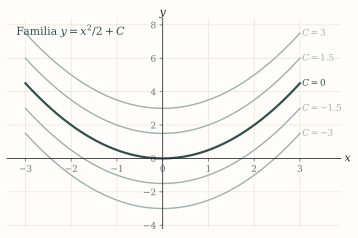
Ejercicio 20 · Curva a partir de su pendiente
Ejemplo 1
La pendiente de la recta tangente a una curva es x + 3. Obtén la ecuación de la curva si pasa por el punto (2, 4).
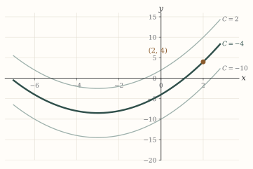
- La pendiente de la recta tangente es la derivada, así que dy/dx = x + 3.
- Se integra para obtener la familia de curvas: y = ∫(x + 3) dx = x²/2 + 3x + C.
- Como la curva pasa por (2, 4), se sustituye x = 2, y = 4: 4 = 2²/2 + 3(2) + C = 8 + C, de donde C = −4.
- Se sustituye el valor de C en la ecuación general.
Resultado: y = x²/2 + 3x − 4
Ejemplo 2
La derivada de una función es f ′(x) = cos x. Encuentra f(x) si su gráfica contiene el punto (π/2, 3).
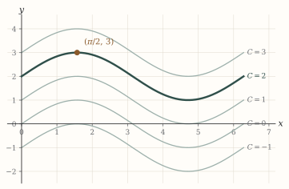
- Se integra la derivada: f(x) = ∫cos x dx = sen x + C.
- Se sustituye el punto: 3 = sen(π/2) + C = 1 + C.
- Se despeja la constante: C = 2.
Resultado: f(x) = sen x + 2
Ejemplo 3
La pendiente de una curva en cada punto es 3x² − 2x. Obtén su ecuación si pasa por el punto (1, 5).
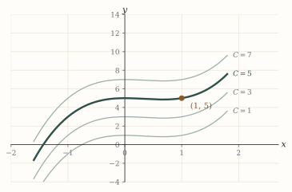
- Se plantea dy/dx = 3x² − 2x y se integra: y = x³ − x² + C.
- Se sustituye (1, 5): 5 = 1³ − 1² + C = 0 + C.
- Por tanto C = 5.
Resultado: y = x³ − x² + 5
Ejemplo 4
Si dy/dx = ex y la curva pasa por (0, 3), encuentra la ecuación de la curva.
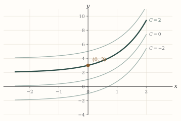
- Se integra: y = ∫ex dx = ex + C.
- Se sustituye (0, 3): 3 = e⁰ + C = 1 + C.
- Se despeja: C = 2.
Resultado: y = ex + 2
Ejemplo 5
Una curva cumple y″ = 6x, su pendiente en x = 0 es −3 y pasa por el punto (0, 1). Encuentra su ecuación.
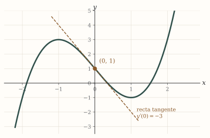
- Se integra una vez para obtener la pendiente: y ′ = ∫6x dx = 3x² + C1.
- Con y ′(0) = −3: −3 = 0 + C1, así que C1 = −3 y y ′ = 3x² − 3.
- Se integra de nuevo: y = ∫(3x² − 3) dx = x³ − 3x + C2.
- Con el punto (0, 1): 1 = 0 − 0 + C2, por lo que C2 = 1.
Resultado: y = x³ − 3x + 1
Integral definida
La integral definida entre a y b es un número. Se calcula con el teorema fundamental del cálculo: se halla una antiderivada F y se evalúa en los límites. Si la región queda debajo del eje X, la integral resulta negativa.
Ejercicio 21 · Valor de la integral definida
Ejemplo 1
Evalúa ∫03 (x² + 1) dx.
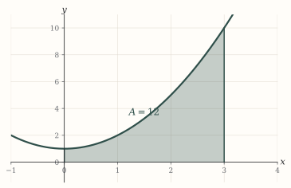
- Se busca una antiderivada del integrando: F(x) = x³/3 + x (no se escribe la constante en la integral definida).
- Se aplica el teorema fundamental del cálculo: ∫ab f(x) dx = F(b) − F(a).
- F(3) = 27/3 + 3 = 12 y F(0) = 0.
- Se restan: 12 − 0.
Resultado: 12
Ejemplo 2
Evalúa ∫14 √x dx.
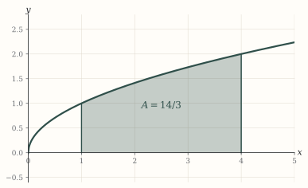
- Se escribe la raíz como potencia: √x = x1/2.
- Una antiderivada es F(x) = (2/3) x3/2.
- F(4) = (2/3)(8) = 16/3 y F(1) = 2/3.
- Se restan: 16/3 − 2/3 = 14/3.
Resultado: 14/3
Ejemplo 3
Evalúa ∫0π sen x dx.
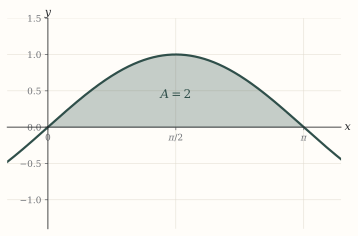
- Una antiderivada de sen x es F(x) = −cos x.
- F(π) = −cos π = −(−1) = 1.
- F(0) = −cos 0 = −1.
- Se restan: 1 − (−1) = 2.
Resultado: 2
Ejemplo 4
Evalúa ∫01 e2x dx.
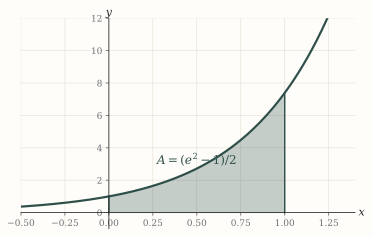
- Se hace el cambio de variable v = 2x, dv = 2 dx, y se obtiene la antiderivada F(x) = e2x/2.
- F(1) = e²/2 y F(0) = e⁰/2 = 1/2.
- Se restan: e²/2 − 1/2 = (e² − 1)/2.
- Numéricamente, (7.3891 − 1)/2 ≈ 3.1945.
Resultado: (e² − 1)/2 ≈ 3.1945
Ejemplo 5
Evalúa ∫02 (x² − 2x) dx e interpreta el signo del resultado.
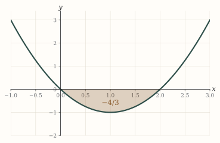
- Una antiderivada es F(x) = x³/3 − x².
- F(2) = 8/3 − 4 = −4/3 y F(0) = 0.
- Se restan: −4/3 − 0 = −4/3.
- El resultado es negativo porque en [0, 2] la curva está por debajo del eje X: la integral mide un área con signo. El área geométrica de la región es 4/3 u².
Resultado: −4/3
Área bajo la curva
Cuando f(x) ≥ 0 en [a, b], el área comprendida entre la curva, el eje X y las rectas x = a, x = b es la integral definida. Si la curva cruza el eje X, el área se calcula por tramos, tomando cada tramo en valor positivo. Cuando la curva está dada como x = g(y), se integra respecto a y.
Ejercicio 22 · Áreas bajo la curva
Ejemplo 1
Determina el área limitada por f(x) = 2x + 1, las rectas x = 1, x = 4 y el eje X.
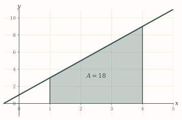
- En [1, 4] la función es positiva, así que el área es A = ∫14 (2x + 1) dx.
- Una antiderivada es F(x) = x² + x.
- F(4) = 16 + 4 = 20 y F(1) = 1 + 1 = 2.
- A = 20 − 2 = 18.
- Verificación geométrica: la región es un trapecio de bases 3 y 9 y altura 3, cuya área es (3 + 9)/2 · 3 = 18.
Resultado: A = 18 u²
Ejemplo 2
Determina el área limitada por y = 9 − x² y el eje X.
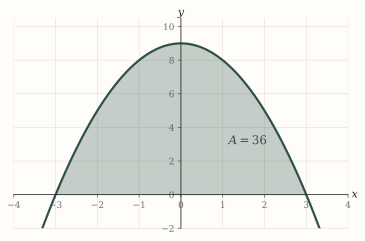
- Los límites de integración son los puntos donde la curva corta al eje X: 9 − x² = 0 ⇒ x = −3 y x = 3.
- Entre esos puntos la curva está sobre el eje X, así que A = ∫−33 (9 − x²) dx.
- Una antiderivada es F(x) = 9x − x³/3, con F(3) = 27 − 9 = 18 y F(−3) = −27 + 9 = −18.
- A = 18 − (−18) = 36.
Resultado: A = 36 u²
Ejemplo 3
Determina el área limitada por f(x) = x³, las rectas x = 1, x = 3 y el eje X.
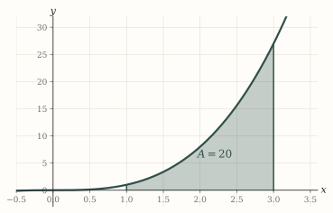
- En [1, 3] la función es positiva: A = ∫13 x³ dx.
- Una antiderivada es F(x) = x⁴/4.
- F(3) = 81/4 y F(1) = 1/4.
- A = 81/4 − 1/4 = 80/4 = 20.
Resultado: A = 20 u²
Ejemplo 4
Determina el área limitada por la curva x = y² + 1, las rectas y = 1, y = 3 y el eje Y.
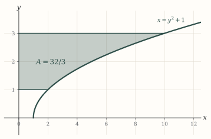
- La curva está dada como x en función de y, por lo que las franjas son horizontales y se integra respecto a y: A = ∫13 (y² + 1) dy.
- Una antiderivada es F(y) = y³/3 + y.
- F(3) = 9 + 3 = 12 y F(1) = 1/3 + 1 = 4/3.
- A = 12 − 4/3 = 32/3 ≈ 10.67.
Resultado: A = 32/3 u²
Ejemplo 5
Determina el área limitada por y = x² − 4, las rectas x = 0, x = 3 y el eje X.
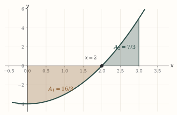
- La curva corta al eje X en x = 2 (x² − 4 = 0). En [0, 2] queda debajo del eje y en [2, 3] queda arriba, así que el área se divide en dos tramos.
- Tramo bajo el eje (se cambia el signo para obtener un área positiva): A1 = ∫02 (4 − x²) dx = [4x − x³/3]02 = 8 − 8/3 = 16/3.
- Tramo sobre el eje: A2 = ∫23 (x² − 4) dx = [x³/3 − 4x]23 = (9 − 12) − (8/3 − 8) = 7/3.
- Se suman las dos áreas: A = 16/3 + 7/3 = 23/3 ≈ 7.67.
Resultado: A = 23/3 u²
Fórmula de trapecios
Cuando no es posible (o no conviene) integrar de forma exacta, el área se aproxima dividiendo [a, b] en n subintervalos iguales y sustituyendo cada franja por un trapecio.
Ejercicio 23 · Fórmula de trapecios
Ejemplo 1
Utiliza la fórmula de trapecios para aproximar ∫02 x² dx con n = 4.
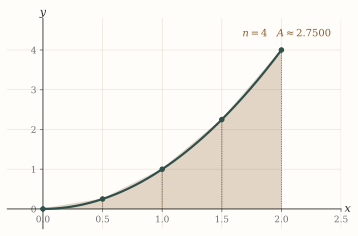
- Se calcula el ancho de cada subintervalo: Δx = (b − a)/n = (2 − 0)/4 = 0.5.
- Se obtienen los nodos xi = a + iΔx y se evalúa la función en cada uno:
i 0 1 2 3 4 xi 0 0.5 1 1.5 2 f(xi) 0.00000 0.25000 1.00000 2.25000 4.00000 - Se aplica la fórmula de trapecios: A ≈ (Δx/2)[y0 + 2(y1 + … + yn−1) + yn].
- Con Δx/2 = 0.2500, se sustituye: A ≈ 0.2500 · [0.00000 + 2(0.25000 + 1.00000 + 2.25000) + 4.00000] = 0.2500 · 11.00000.
- Comparación: el valor exacto es 8/3 ≈ 2.6667, por lo que el error de la aproximación es de aproximadamente 0.0833.
Resultado: A ≈ 2.7500 u²
Ejemplo 2
Utiliza la fórmula de trapecios para aproximar ∫13 dx/x con n = 4.
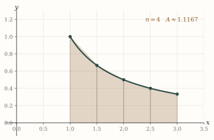
- Se calcula el ancho de cada subintervalo: Δx = (b − a)/n = (3 − 1)/4 = 0.5.
- Se obtienen los nodos xi = a + iΔx y se evalúa la función en cada uno:
i 0 1 2 3 4 xi 1 1.5 2 2.5 3 f(xi) 1.00000 0.66667 0.50000 0.40000 0.33333 - Se aplica la fórmula de trapecios: A ≈ (Δx/2)[y0 + 2(y1 + … + yn−1) + yn].
- Con Δx/2 = 0.2500, se sustituye: A ≈ 0.2500 · [1.00000 + 2(0.66667 + 0.50000 + 0.40000) + 0.33333] = 0.2500 · 4.46667.
- Comparación: el valor exacto es ln 3 ≈ 1.0986, por lo que el error de la aproximación es de aproximadamente 0.0181.
Resultado: A ≈ 1.1167 u²
Ejemplo 3
Utiliza la fórmula de trapecios para aproximar ∫0π sen x dx con n = 4.
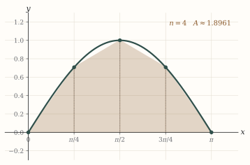
- Se calcula el ancho de cada subintervalo: Δx = (b − a)/n = (π − 0)/4 = π/4 ≈ 0.7854.
- Se obtienen los nodos xi = a + iΔx y se evalúa la función en cada uno:
i 0 1 2 3 4 xi 0 π/4 π/2 3π/4 π f(xi) 0.00000 0.70711 1.00000 0.70711 0.00000 - Se aplica la fórmula de trapecios: A ≈ (Δx/2)[y0 + 2(y1 + … + yn−1) + yn].
- Con Δx/2 = π/8 ≈ 0.3927, se sustituye: A ≈ 0.3927 · [0.00000 + 2(0.70711 + 1.00000 + 0.70711) + 0.00000] = 0.3927 · 4.82844.
- Comparación: el valor exacto es 2 ≈ 2.0000, por lo que el error de la aproximación es de aproximadamente 0.1039.
Resultado: A ≈ 1.8961 u²
Ejemplo 4
Utiliza la fórmula de trapecios para aproximar ∫04 √x dx con n = 4.
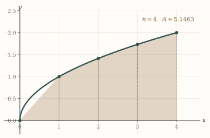
- Se calcula el ancho de cada subintervalo: Δx = (b − a)/n = (4 − 0)/4 = 1.
- Se obtienen los nodos xi = a + iΔx y se evalúa la función en cada uno:
i 0 1 2 3 4 xi 0 1 2 3 4 f(xi) 0.00000 1.00000 1.41421 1.73205 2.00000 - Se aplica la fórmula de trapecios: A ≈ (Δx/2)[y0 + 2(y1 + … + yn−1) + yn].
- Con Δx/2 = 0.5000, se sustituye: A ≈ 0.5000 · [0.00000 + 2(1.00000 + 1.41421 + 1.73205) + 2.00000] = 0.5000 · 10.29252.
- Comparación: el valor exacto es 16/3 ≈ 5.3333, por lo que el error de la aproximación es de aproximadamente 0.1871.
Resultado: A ≈ 5.1463 u²
Ejemplo 5
Utiliza la fórmula de trapecios para aproximar ∫02 dx/(1 + x²) con n = 4.
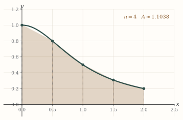
- Se calcula el ancho de cada subintervalo: Δx = (b − a)/n = (2 − 0)/4 = 0.5.
- Se obtienen los nodos xi = a + iΔx y se evalúa la función en cada uno:
i 0 1 2 3 4 xi 0 0.5 1 1.5 2 f(xi) 1.00000 0.80000 0.50000 0.30769 0.20000 - Se aplica la fórmula de trapecios: A ≈ (Δx/2)[y0 + 2(y1 + … + yn−1) + yn].
- Con Δx/2 = 0.2500, se sustituye: A ≈ 0.2500 · [1.00000 + 2(0.80000 + 0.50000 + 0.30769) + 0.20000] = 0.2500 · 4.41538.
- Comparación: el valor exacto es arctan 2 ≈ 1.1071, por lo que el error de la aproximación es de aproximadamente 0.0033.
Resultado: A ≈ 1.1038 u²
Método de Simpson 1/3
Simpson sustituye cada par de subintervalos por un arco de parábola, por lo que suele ser más preciso que los trapecios. Exige que n sea par.
Ejercicio 24 · Método de Simpson 1/3
Ejemplo 1
Utiliza el método de Simpson 1/3 para aproximar ∫02 x² dx con n = 4.
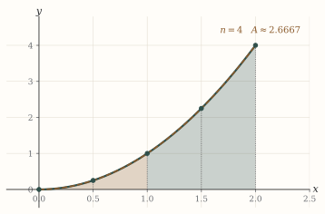
- Como n = 4 es par, se puede aplicar Simpson 1/3. Se calcula Δx = (b − a)/n = (2 − 0)/4 = 0.5.
- Se obtienen los nodos y se evalúa la función; el coeficiente alterna 4 y 2 en los puntos interiores y vale 1 en los extremos:
i 0 1 2 3 4 xi 0 0.5 1 1.5 2 f(xi) 0.00000 0.25000 1.00000 2.25000 4.00000 coeficiente 1 4 2 4 1 - Se aplica la fórmula: A ≈ (Δx/3)[y0 + 4(y1 + y3 + …) + 2(y2 + y4 + …) + yn].
- Con Δx/3 = 1/6 ≈ 0.1667, se agrupan las ordenadas de índice impar (coeficiente 4) y de índice par (coeficiente 2): A ≈ 0.1667 · [0.00000 + 4(0.25000 + 2.25000) + 2(1.00000) + 4.00000] = 0.1667 · 16.00000.
- Comparación: el valor exacto es 8/3 ≈ 2.6667, por lo que el error es de menos de 0.0001.
- Observación: Simpson resulta exacto para polinomios de grado menor o igual que 3, por eso aquí coincide con el valor exacto 8/3.
Resultado: A ≈ 2.6667 u²
Ejemplo 2
Utiliza el método de Simpson 1/3 para aproximar ∫0π sen x dx con n = 4.
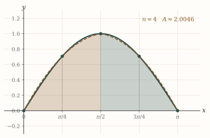
- Como n = 4 es par, se puede aplicar Simpson 1/3. Se calcula Δx = (b − a)/n = (π − 0)/4 = π/4 ≈ 0.7854.
- Se obtienen los nodos y se evalúa la función; el coeficiente alterna 4 y 2 en los puntos interiores y vale 1 en los extremos:
i 0 1 2 3 4 xi 0 π/4 π/2 3π/4 π f(xi) 0.00000 0.70711 1.00000 0.70711 0.00000 coeficiente 1 4 2 4 1 - Se aplica la fórmula: A ≈ (Δx/3)[y0 + 4(y1 + y3 + …) + 2(y2 + y4 + …) + yn].
- Con Δx/3 = π/12 ≈ 0.2618, se agrupan las ordenadas de índice impar (coeficiente 4) y de índice par (coeficiente 2): A ≈ 0.2618 · [0.00000 + 4(0.70711 + 0.70711) + 2(1.00000) + 0.00000] = 0.2618 · 7.65688.
- Comparación: el valor exacto es 2 ≈ 2.0000, por lo que el error es de aproximadamente 0.0046.
Resultado: A ≈ 2.0046 u²
Ejemplo 3
Utiliza el método de Simpson 1/3 para aproximar ∫13 dx/x con n = 4.
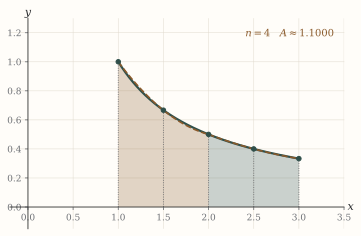
- Como n = 4 es par, se puede aplicar Simpson 1/3. Se calcula Δx = (b − a)/n = (3 − 1)/4 = 0.5.
- Se obtienen los nodos y se evalúa la función; el coeficiente alterna 4 y 2 en los puntos interiores y vale 1 en los extremos:
i 0 1 2 3 4 xi 1 1.5 2 2.5 3 f(xi) 1.00000 0.66667 0.50000 0.40000 0.33333 coeficiente 1 4 2 4 1 - Se aplica la fórmula: A ≈ (Δx/3)[y0 + 4(y1 + y3 + …) + 2(y2 + y4 + …) + yn].
- Con Δx/3 = 1/6 ≈ 0.1667, se agrupan las ordenadas de índice impar (coeficiente 4) y de índice par (coeficiente 2): A ≈ 0.1667 · [1.00000 + 4(0.66667 + 0.40000) + 2(0.50000) + 0.33333] = 0.1667 · 6.60001.
- Comparación: el valor exacto es ln 3 ≈ 1.0986, por lo que el error es de aproximadamente 0.0014.
Resultado: A ≈ 1.1000 u²
Ejemplo 4
Utiliza el método de Simpson 1/3 para aproximar ∫02 dx/(1 + x²) con n = 4.
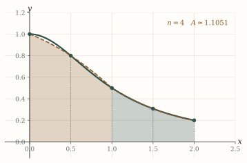
- Como n = 4 es par, se puede aplicar Simpson 1/3. Se calcula Δx = (b − a)/n = (2 − 0)/4 = 0.5.
- Se obtienen los nodos y se evalúa la función; el coeficiente alterna 4 y 2 en los puntos interiores y vale 1 en los extremos:
i 0 1 2 3 4 xi 0 0.5 1 1.5 2 f(xi) 1.00000 0.80000 0.50000 0.30769 0.20000 coeficiente 1 4 2 4 1 - Se aplica la fórmula: A ≈ (Δx/3)[y0 + 4(y1 + y3 + …) + 2(y2 + y4 + …) + yn].
- Con Δx/3 = 1/6 ≈ 0.1667, se agrupan las ordenadas de índice impar (coeficiente 4) y de índice par (coeficiente 2): A ≈ 0.1667 · [1.00000 + 4(0.80000 + 0.30769) + 2(0.50000) + 0.20000] = 0.1667 · 6.63076.
- Comparación: el valor exacto es arctan 2 ≈ 1.1071, por lo que el error es de aproximadamente 0.0020.
Resultado: A ≈ 1.1051 u²
Ejemplo 5
Utiliza el método de Simpson 1/3 para aproximar ∫01 ex dx con n = 6.
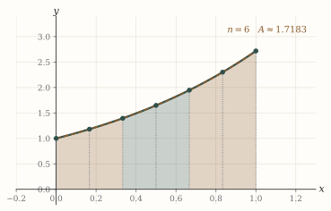
- Como n = 6 es par, se puede aplicar Simpson 1/3. Se calcula Δx = (b − a)/n = (1 − 0)/6 ≈ 0.1667.
- Se obtienen los nodos y se evalúa la función; el coeficiente alterna 4 y 2 en los puntos interiores y vale 1 en los extremos:
i 0 1 2 3 4 5 6 xi 0 1/6 2/6 3/6 4/6 5/6 1 f(xi) 1.00000 1.18136 1.39561 1.64872 1.94773 2.30098 2.71828 coeficiente 1 4 2 4 2 4 1 - Se aplica la fórmula: A ≈ (Δx/3)[y0 + 4(y1 + y3 + …) + 2(y2 + y4 + …) + yn].
- Con Δx/3 = 1/18 ≈ 0.0556, se agrupan las ordenadas de índice impar (coeficiente 4) y de índice par (coeficiente 2): A ≈ 0.0556 · [1.00000 + 4(1.18136 + 1.64872 + 2.30098) + 2(1.39561 + 1.94773) + 2.71828] = 0.0556 · 30.92920.
- Comparación: el valor exacto es e − 1 ≈ 1.7183, por lo que el error es de menos de 0.0001.
Resultado: A ≈ 1.7183 u²
Área entre curvas
Para hallar el área entre dos curvas se igualan las funciones para obtener los puntos de intersección, se identifica cuál curva queda arriba en cada tramo y se integra la diferencia (superior − inferior).
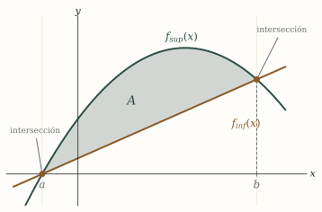
Ejercicio 25 · Área entre curvas
Ejemplo 1
Obtén el área limitada entre las curvas y = x² y y = x + 2.
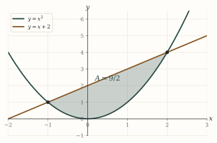
- Se hallan los puntos de intersección igualando las funciones: x² = x + 2 ⇒ x² − x − 2 = 0 ⇒ (x − 2)(x + 1) = 0, de donde x = −1 y x = 2.
- Se determina cuál función queda arriba: en x = 0, la recta vale 2 y la parábola 0, así que la recta es la superior.
- Se plantea A = ∫−12 [(x + 2) − x²] dx.
- Una antiderivada es F(x) = x²/2 + 2x − x³/3, con F(2) = 10/3 y F(−1) = −7/6.
- A = 10/3 − (−7/6) = 20/6 + 7/6 = 27/6 = 9/2.
Resultado: A = 9/2 u²
Ejemplo 2
Obtén el área limitada entre las curvas y = 4x − x² y y = x².
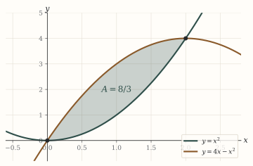
- Se igualan las funciones: 4x − x² = x² ⇒ 4x − 2x² = 0 ⇒ 2x(2 − x) = 0, de donde x = 0 y x = 2.
- En x = 1: 4(1) − 1 = 3 y 1² = 1, así que 4x − x² es la curva superior.
- Se plantea A = ∫02 [(4x − x²) − x²] dx = ∫02 (4x − 2x²) dx.
- A = [2x² − 2x³/3]02 = 8 − 16/3 = 8/3.
Resultado: A = 8/3 u²
Ejemplo 3
Obtén el área limitada entre las curvas y = x³ y y = x.
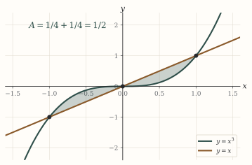
- Se igualan las funciones: x³ = x ⇒ x(x² − 1) = 0, de donde x = −1, 0 y 1. Hay dos regiones cerradas.
- En (−1, 0) la curva superior es y = x³ (por ejemplo, en x = −0.5: −0.125 > −0.5); en (0, 1) la superior es y = x.
- A1 = ∫−10 (x³ − x) dx = [x⁴/4 − x²/2]−10 = 0 − (1/4 − 1/2) = 1/4.
- A2 = ∫01 (x − x³) dx = [x²/2 − x⁴/4]01 = 1/2 − 1/4 = 1/4.
- Se suman: A = 1/4 + 1/4 = 1/2.
Resultado: A = 1/2 u²
Ejemplo 4
Obtén el área limitada entre las curvas y = √x y y = x².
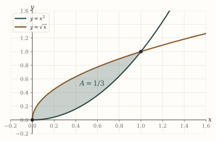
- Se igualan las funciones: √x = x². Al elevar al cuadrado, x = x⁴ ⇒ x(1 − x³) = 0, de donde x = 0 y x = 1.
- En x = 0.25: √0.25 = 0.5 y 0.25² = 0.0625, así que √x es la curva superior.
- Se plantea A = ∫01 (x1/2 − x²) dx = [(2/3)x3/2 − x³/3]01.
- A = 2/3 − 1/3 = 1/3.
Resultado: A = 1/3 u²
Ejemplo 5
Obtén el área limitada entre las curvas x = y² y x = 2y + 3.
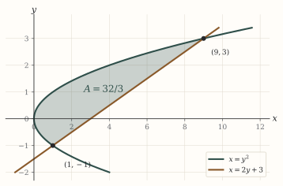
- Las curvas están dadas como x en función de y, por lo que se integra respecto a y. Se igualan: y² = 2y + 3 ⇒ y² − 2y − 3 = 0 ⇒ (y − 3)(y + 1) = 0, de donde y = −1 y y = 3.
- Se determina la curva de la derecha: en y = 0, la recta da x = 3 y la parábola x = 0, así que la recta queda a la derecha.
- Se plantea A = ∫−13 [(2y + 3) − y²] dy.
- Una antiderivada es F(y) = y² + 3y − y³/3, con F(3) = 9 y F(−1) = −5/3.
- A = 9 − (−5/3) = 32/3.
Resultado: A = 32/3 u²